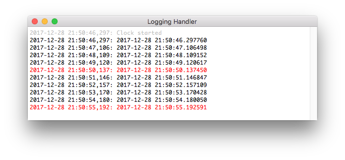
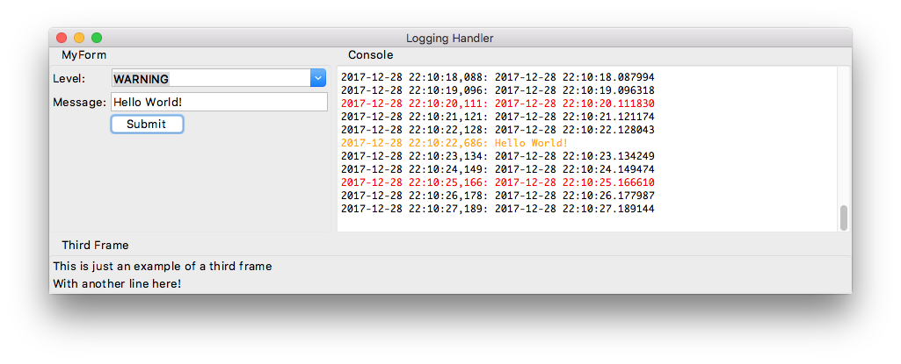
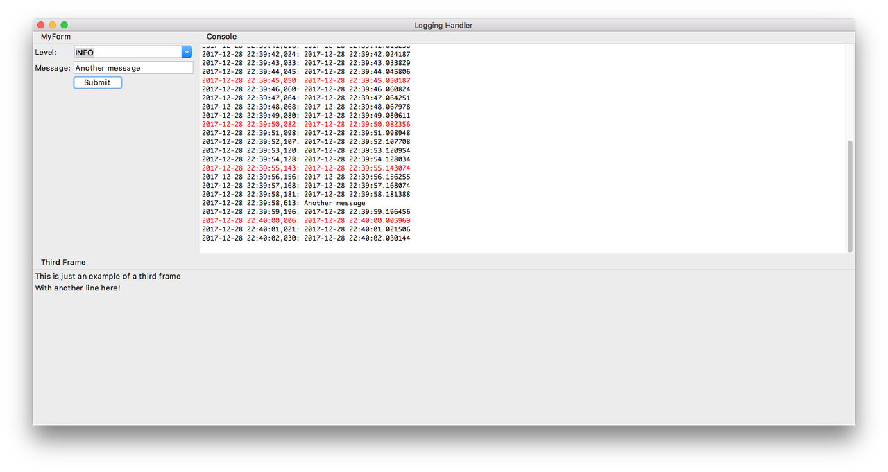

Logging to a Tkinter ScrolledText Widget
I've been programming in Python for almost 10 years. I did many CLI tools, some web applications (mainly using Flask), but I had never built a GUI.
PyQt seems to be one of the most popular framework. I had a look at it but I was not hooked. It looks like you really need to embrace the Qt world. You shouldn't try to use Python Thread but use QtThread instead. Need pySerial? Wait there is QtSerial. I guess this can be a pro or con depending on your background.
I looked more in tkinter. I must say that in my mind it was a bit old and wasn't looking very modern. I didn't know that Tk 8.5 came with an entirely new themed widget set to address the dated appearance. The official tutorial is quite nice and comes with code examples in different languages (including Python).
The GUI I needed to write wasn't very advanced. I wanted to have a kind of console where to display log messages.
TextHandler
I quickly found an example on StackOverflow to send Python logging to a tkinter Text widget:
class TextHandler(logging.Handler):
"""This class allows you to log to a Tkinter Text or ScrolledText widget"""
def __init__(self, text):
# run the regular Handler __init__
logging.Handler.__init__(self)
# Store a reference to the Text it will log to
self.text = text
def emit(self, record):
msg = self.format(record)
def append():
self.text.configure(state='normal')
self.text.insert(tk.END, msg + '\n')
self.text.configure(state='disabled')
# Autoscroll to the bottom
self.text.yview(tk.END)
# This is necessary because we can't modify the Text from other threads
self.text.after(0, append)
This looks nice but doesn't work if you try to send a log message from another thread (despite the comment)... because we are passing the text widget with the logging handler to the other thread. And you can only write to a tkinter widget from the main thread.
This is explained in another StackOverflow question but I didn't like the proposed solution. If you implement specific methods as explained (put_line_to_queue), you lose the advantage of just calling the log function from different parts of the program.
QueueHandler
Using a Queue is indeed the way to share data between threads. So I implemented a simple QueueHandler:
class QueueHandler(logging.Handler):
"""Class to send logging records to a queue
It can be used from different threads
"""
def __init__(self, log_queue):
super().__init__()
self.log_queue = log_queue
def emit(self, record):
self.log_queue.put(record)
The handler only puts the message in a queue. I created a ConsoleUi class to poll the messages from the queue and display them in a scrolled text widget:
logger = logging.getLogger(__name__)
class ConsoleUi:
"""Poll messages from a logging queue and display them in a scrolled text widget"""
def __init__(self, frame):
self.frame = frame
# Create a ScrolledText wdiget
self.scrolled_text = ScrolledText(frame, state='disabled', height=12)
self.scrolled_text.grid(row=0, column=0, sticky=(N, S, W, E))
self.scrolled_text.configure(font='TkFixedFont')
self.scrolled_text.tag_config('INFO', foreground='black')
self.scrolled_text.tag_config('DEBUG', foreground='gray')
self.scrolled_text.tag_config('WARNING', foreground='orange')
self.scrolled_text.tag_config('ERROR', foreground='red')
self.scrolled_text.tag_config('CRITICAL', foreground='red', underline=1)
# Create a logging handler using a queue
self.log_queue = queue.Queue()
self.queue_handler = QueueHandler(self.log_queue)
formatter = logging.Formatter('%(asctime)s: %(message)s')
self.queue_handler.setFormatter(formatter)
logger.addHandler(self.queue_handler)
# Start polling messages from the queue
self.frame.after(100, self.poll_log_queue)
def display(self, record):
msg = self.queue_handler.format(record)
self.scrolled_text.configure(state='normal')
self.scrolled_text.insert(tk.END, msg + '\n', record.levelname)
self.scrolled_text.configure(state='disabled')
# Autoscroll to the bottom
self.scrolled_text.yview(tk.END)
def poll_log_queue(self):
# Check every 100ms if there is a new message in the queue to display
while True:
try:
record = self.log_queue.get(block=False)
except queue.Empty:
break
else:
self.display(record)
self.frame.after(100, self.poll_log_queue)
I can safely use the logger from different threads because only a queue is passed with the handler, no tkinter widget.
To demonstrate that, I created a separate thread to display the time every seconds:
class Clock(threading.Thread):
"""Class to display the time every seconds
Every 5 seconds, the time is displayed using the logging.ERROR level
to show that different colors are associated to the log levels
"""
def __init__(self):
super().__init__()
self._stop_event = threading.Event()
def run(self):
logger.debug('Clock started')
previous = -1
while not self._stop_event.is_set():
now = datetime.datetime.now()
while not self._stop_event.is_set():
now = datetime.datetime.now()
if previous != now.second:
previous = now.second
if now.second % 5 == 0:
level = logging.ERROR
else:
level = logging.INFO
logger.log(level, now)
time.sleep(0.2)
def stop(self):
self._stop_event.set()
The full code is available on github. If you checkout the version v0.1.0 and run it, you'll see something like that:
3-pane layout
The ConsoleUi class takes a frame as argument. It makes it easy to integrate in another layout. Let's see an example with a Paned Window widget to implement the common 3-pane layout.
Let's first create two new classes. The first one will be used to display a simple form to send a message via logging. The user can select the desired logging level:
class FormUi:
def __init__(self, frame):
self.frame = frame
# Create a combobbox to select the logging level
values = ['DEBUG', 'INFO', 'WARNING', 'ERROR', 'CRITICAL']
self.level = tk.StringVar()
ttk.Label(self.frame, text='Level:').grid(column=0, row=0, sticky=W)
self.combobox = ttk.Combobox(
self.frame,
textvariable=self.level,
width=25,
state='readonly',
values=values
)
self.combobox.current(0)
self.combobox.grid(column=1, row=0, sticky=(W, E))
# Create a text field to enter a message
self.message = tk.StringVar()
ttk.Label(self.frame, text='Message:').grid(column=0, row=1, sticky=W)
ttk.Entry(self.frame, textvariable=self.message, width=25).grid(column=1, row=1, sticky=(W, E))
# Add a button to log the message
self.button = ttk.Button(self.frame, text='Submit', command=self.submit_message)
self.button.grid(column=1, row=2, sticky=W)
def submit_message(self):
# Get the logging level numeric value
lvl = getattr(logging, self.level.get())
logger.log(lvl, self.message.get())
The other class is a dummy one to show the 3-pane layout:
class ThirdUi:
def __init__(self, frame):
self.frame = frame
ttk.Label(self.frame, text='This is just an example of a third frame').grid(column=0, row=1, sticky=W)
ttk.Label(self.frame, text='With another line here!').grid(column=0, row=4, sticky=W)
With those new classes, the only change required is in the App class to create a vertical and horizontal ttk.PanedWindow. The horizontal pane is splitted in two frames (the form and console):
class App:
def __init__(self, root):
@@ -109,11 +148,24 @@ class App:
root.title('Logging Handler')
root.columnconfigure(0, weight=1)
root.rowconfigure(0, weight=1)
- console_frame = ttk.Frame(root)
- console_frame.grid(column=0, row=0, sticky=(N, W, E, S))
+ # Create the panes and frames
+ vertical_pane = ttk.PanedWindow(self.root, orient=VERTICAL)
+ vertical_pane.grid(row=0, column=0, sticky="nsew")
+ horizontal_pane = ttk.PanedWindow(vertical_pane, orient=HORIZONTAL)
+ vertical_pane.add(horizontal_pane)
+ form_frame = ttk.Labelframe(horizontal_pane, text="MyForm")
+ form_frame.columnconfigure(1, weight=1)
+ horizontal_pane.add(form_frame, weight=1)
+ console_frame = ttk.Labelframe(horizontal_pane, text="Console")
console_frame.columnconfigure(0, weight=1)
console_frame.rowconfigure(0, weight=1)
+ horizontal_pane.add(console_frame, weight=1)
+ third_frame = ttk.Labelframe(vertical_pane, text="Third Frame")
+ vertical_pane.add(third_frame, weight=1)
+ # Initialize all frames
+ self.form = FormUi(form_frame)
self.console = ConsoleUi(console_frame)
+ self.third = ThirdUi(third_frame)
self.clock = Clock()
self.clock.start()
self.root.protocol('WM_DELETE_WINDOW', self.quit)
Note that the Clock and ConsoleUi classes were left untouched. We just pass a ttk.LabelFrame instead of a ttk.Frame to the ConsoleUi class.
This looks more like what could be a real application:
The main window and the different panes can be resized nicely:
As already mentioned, the full example is available on github. You can checkout the version v0.2.0 to see the 3-pane layout.
Conclusion
I want to give some credit to tkinter. It doesn't have a steep learning curve and allows to easily create some nice GUI. You can continue using what you know in Python (Queue, Threads, modules like pySerial). I can only recomment it if you are familiar with Python and want to create a simple GUI. That being said, I'll probably try to dive more in PyQt when I have more time.
Comments
Comments powered by Disqus